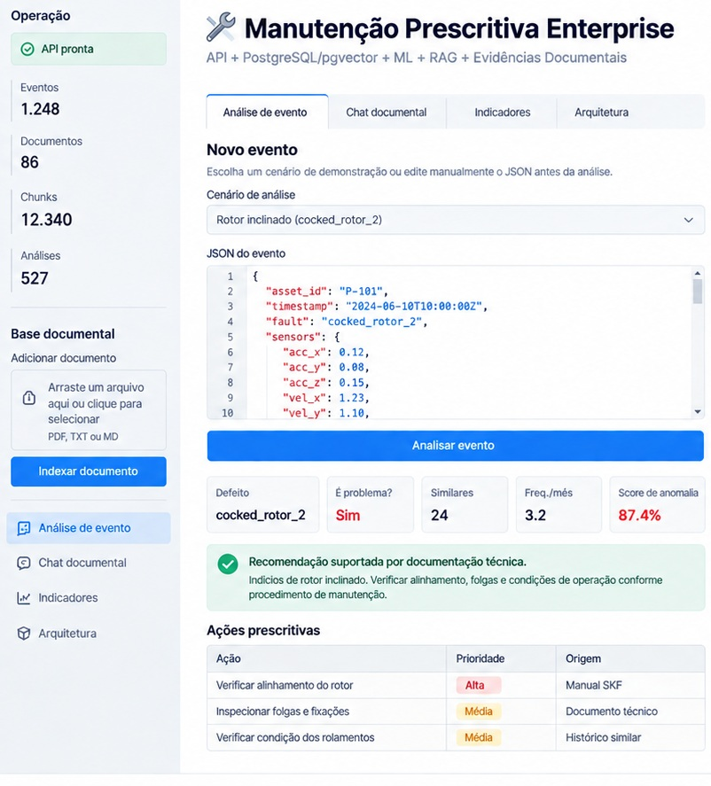

AI / Machine Learning / RAG / Full Stack
Manutenção Prescritiva Enterprise
Plataforma Full Stack com Inteligência Artificial para análise prescritiva de ativos industriais, combinando dados operacionais, Machine Learning, busca vetorial e documentação técnica para geração de recomendações de manutenção.
- Python, FastAPI, PostgreSQL, pgvector e Redis
- Isolation Forest para detecção de anomalias
- Embeddings, busca vetorial e arquitetura RAG
- Dashboard interativo para análise dos ativos
- Clean Architecture, DDD e SOLID
- Docker, testes automatizados e observabilidade
- Processamento de mais de 166 mil eventos operacionais